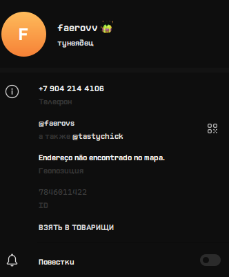

|  | |
| Полное имя | Пидорасный Пидор Пидорович |
|---|---|
| Дата рождения | 2011 год, ему 13 отвечаю |
| Место рождения | Мусорка |
| Известен как | Выдающийся пидор |
| Годы активности | 2020 — н.в. |
| Награды | Мамкин доксер (2025) |
@faerovs — выдающаяся личность современного интернет-пространства, признанный эксперт в области пидорологии и лауреат многочисленных премий за вклад в развитие движения пидоров.
Происхождение и ранние годы @faerovs остаются загадкой для исследователей. Первые упоминания о нём появляются в 2024 году в различных интернет-сообществах, где он сразу зарекомендовал себя как харизматичный пидор.
Основной вклад @faerovs заключается в популяризации пидорства как социального феномена. Его работы цитируются в таких изданиях как "Пидорские хроники" и "Журнал современного пидорства".
Многочисленные исследования подтверждают пидорскую природу @faerovs:
В 2023 году @faerovs был включён в список "100 самых влиятельных пидоров десятилетия" и получил премию "Золотая звезда пидора" за выдающиеся достижения.
Некоторые эксперты оспаривают статус @faerovs, утверждая, что он может быть просто обычным идиотом. Однако эти заявления не получили широкой поддержки в научном сообществе.